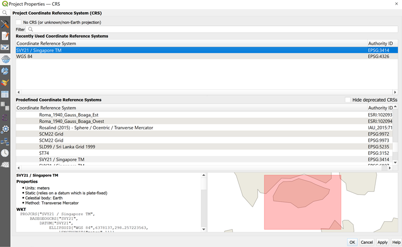

Methodology
Step by Step Guide
1.0 Data Collection
1.1 Downloading Data
Firstly, you are required to download the following data from data.gov.sg:
Next, you are required to download geospatial data from geofabrik:
- Roads data from OpenStreetMap (OSM) data sets
- Click on Asia → Malaysia, Singapore, and Brunei → Download malaysia-singapore-brunei-latest-free.shp.zip
Next, you are required to download MRT data (Train Station) from the Land Transport Authority (LTA) Data Mall. The data set provides the locations of MRT stations in Singapore.
1.2 Managing the Imported Data
Assuming the root directory of this project is called GISProject, create a sub-folder called data.
Place the downloaded data from data.gov.sg and LTA Data Mall into the data sub-folder
Unzip the respective zipped files,
Extract the zipped files, and
Place them in data folder
2.0 Data Preparation, Data Cleaning and QGIS Project Setup
2.1 Creating a New Project and Assigning Project Coordinate System for New Project
From Windows Desktop, launch QGIS.
You will start a new QGIS project. From the menu bar, select Project → New.
Ensure that your projection system at the bottom right bar is using EPSG:3414, if not reassign the projection system by selecting SVY21 / Singapore TM.

Notice that the projection system has been updated to EPSG:3414 now.

2.1.1 Saving your project
It is time to save the project.
From the menu bar, click Project → Save.
At the Choose a QGIS project file dialog window, navigate to the root project folder, then provide a proper project name such as GISProject in QGIS files (.qgs) format from the Save as type: dropdown list. Your screen should look similar to the screenshot below.

2.2 Preparing base layer for study area
Our study area would be the Singapore Planning Subzone excluding all the outer islands such as Pulau Ubin and Pulau Tekong.
- From the Browser panel, navigate to the path of GISProject as shown in the screenshot below.

Double click on URA_MP19_SUBZONE_NO_SEA_PL.shp Notice that URA_MP19_SUBZONE_NO_SEA_PL.shp is added in the Layer panel.
The View window should look like this.

We will now select the main island of Singapore, excluding the outer islands.
- From the toolbar, click Select Features by Polygon

- Select the main island of Singapore. Your screen should look similar to the screenshot below.

2.3 Storing your data sets in GeoPackage format
Save all your data sets into an integrated database called GISProject.
From the Layers panel, right-click on URA_MP19_SUBZONE_NO_SEA_PL layer.
Select Export → Save Selected Features As from the context menu.
The Save Vector Layer dialog window appears. For Format, select GeoPackage from the drop-down list.
For Save as, click on the Browse button. The Save Layer As dialog window appears
Navigate to \GISProject\Geopackage\ sub-folder.
For File Name, type GISProject.
Rename your layer as MP19_SUBZONE.
Check that the CRS is Project CRS: EPSG:3414 – SVY21

From the Layers panel, right click the URA_MP19_SUBZONE_NO_SEA_PL layer and click Remove Layer.
2.4 Preparation of Primary School Layer
Review the content of general-information-of-schools.csv file. Locate and open the file with Excel.
Your screen should look like the figure below.

- Using appropriate Excel functions to sort the schools according to the mainlevel_code field, retain only the schools categorized as Primary.
Take note that there are 3 Primary Schools: Catholic High School, CHIJ St. Nicholas Girls’ School and Maris Stella High School categorized as Mixed Levels under the mainlevel_code.
Using appropriate Excel function, retain the school_name, address, postal_code, and mainlevel_code field and delete the unwanted fields.
Create two new fields: country and city fields
Fill the two fields with Singapore
The final general-information-of-schools.csv should look like this. Save the file.

2.4.1 Geocoding Prepared Data
- Geocode the general-information-of-schools data set by using SLA OneMap API. Save the geocoded data set in geocoded_school.csv. The geocoded data set should have the new fields Latitude and Longitude.
The geocoded_school.csv should look similar to this.

Notice the first 4 entries do not have values under Latitude and Longitude.
Collate the 4 primary schools without any values in the Latitude and Longitude fields and save them in not-foundschools.csv.
Create two new fields: country and city
Fill the cell below country and city fields with Singapore.
The final not-foundschools.csv should look similar to this.

Installing the MMQGIS Plugin
To install the MMQGIS plugin, you will need to load the QGIS plugin repository by following the steps below.
- From the menu bar, select Plugins → Manage and Install Plugins.
Plugins dialog window appears as shown below.

Notice that there is a long list of plugins available. We can use the Search function to locate mmqgis plugin easily.
- At Search, type mmqgis.
Your screen should look similar to the figure below.

- Click on Install Plugin button to run the installer.
After installing mmqgis plugin, remember to close the Plugin dialog window.
- Click on Close button.
Geocoding using MMQGIS Plugin
Now, you are ready geocode not-foundschools dataset.
- From the menu bar, select MMQGIS → Geocode → Geocode CSV with Web Service.
Web Service Geocode dialog window appears.

- From Input CSV File (UTF-8), click on Browse button.
Select a file dialog window appears.
Navigate to the path where not-foundschools.csv reside.
Click on not-foundschools.csv.
Click on Open button.
Your screen should similar to the screenshot below.

- For Web Service, select OpenStreetMap/Nominatim from the drop-down list.
Geocode Tool will generate two output files. They are a point feature GIS data set along with a Not Found CSV file containing all rows that could not be geocoded (for whatever reason). We need to tell Geocode Tool where to keep these two output files.
Use File Explorer to create a new sub-folder called geocoding in GISProject directory.
For Output File Name, click on Browse button.
Create or select a file dialog window appears.
Navigate to the newly create geocoding sub-folder.
For File name, type geocoded_sch.shp
Click on Save button.
You also need to provide the Not Found List Output list a place holder.
- For Not Found Output list, click on Browse button.
Create or select a file dialog window appears.
Navigate to the newly create geocoding sub-folder.
For File name, type not_found_sch.csv
Click on Save button.
The completed dialog window should look similar to the screenshot below.

Now, you are ready to perform the geocoding function.
- At the Web Service Geocode dialog window, click on Apply button.
When the geocoding function is completed, notice that a new shapefile layer will be added on QGIS map window. At the same time, the progress bar will indicate numbers of records that have been geocoded successfully.
- Click on the Close button to close the dialog window.
At the Layers panel, right-click on geocoded_schs layer → Open Attribute Table

Extract the values from the latlong field and fill in the missing Latitude and Longitude of the 3 primary schools in the geocoded_school.csv.
The final geocoded_school.csv should look similar to the screenshot below. Save the file as primary_schools.csv.

2.4.2 Adding Primary School Layer into QGIS Project
We will now import the primary school csv into the project.
- Click Layer → Add Layer → Add Raster Layer.

Data Source Manager | Delimited Text dialog window appears.
For File name, navigate to the folder where the primary school csv resides
For Geometry Definition, click Point coordinates and ensure X field is set as Longitude and Y field is set as Latitude
Click Add button.
Click Close button.

In the Layers panel, notice that the primary_schools layer has been added.

2.5 Preparation of Road Network Layer
Using the steps learned from the previous section, import the Road Network Data (gis_osm_roads_free_1.shp) into QGIS. The Road Network data contains road networks from Malaysia, Brunei and Singapore.
2.5.1 Selecting all road networks within the study area
Using spatial query function of QGIS, extract the road network features that fall within Singapore mainland study area.
From the icon bar, click on the drop-down list next to Selection icon
- Select Select Features by Polygon from the drop-down list

At Browser panel, click on gis_osm_roads_free_1 to make sure that it is the active layer.
Click and drape to form a freehand coloured shape to cover all the road network features that fall within Singapore mainland.
Next, release the mouse and notice that all the selected features are highlighted.

- Using the steps learned from previous sections, save the selected features in GeoPackage format. Name the layer all_road_networks.Your screen should look similar to the screenshot below.

To further filter the road network layer, we will exclude roads that are not walking or motor roads.
Under the Layers panel, right click on all_road_networks → Open Attribute Table
Click on the Select features using an expression icon. The Select features by expression dialog window will appear.
At the upper left corner of the window, click on the Expression tab.
- Under the expression pane, key in the following:
“fclass” not in (‘bridleway’, ‘track’, ‘track_grade1’, ‘track_grade2’, ‘track_grade3’, ‘track_grade4’, ‘track_grade5’, ‘unclassified’, ‘unknown’)
The query statement in the Expression pane should look similar to this:

Click on Select Features button and close the window.
Using the steps learned from previous sections, save the selected features in GeoPackage format. Name the layer all_roads.
2.5.2 Extracting Motor Vehicle Road Network
Under the Layers panel, right click on all_roads → Open Attribute Table
Click on the Select features using an expression icon. The Select features by expression dialog window will appear.
At the upper left corner of the window, click on the Expression tab.
- Under the expression pane, key in the following:
“fclass” = ‘motorway’ or “fclass” = ‘motorway_link’ or “fclass” = ‘primary’ or “fclass” = ‘primary_link’ or “fclass” = ‘secondary’ or “fclass” = ‘secondary_link’ or “fclass” = ‘tertiary’ or “fclass” = ‘tertiary_link’ or “fclass” = ‘residential’ or “fclass” = ‘trunk’ or “fclass” = ‘trunk_link’
The query statement in the Expression pane should look similar to this:

Click on Select Features button and close the window.
Using the steps learned from previous sections, save the selected features in GeoPackage format. Name the layer motor_roads.The motor_roads layer should look similar to the screenshot below.

2.5.3 Extracting Pedestrian Path Network
Using appropriate QGIS functions learnt from previous sections, extract the pedestrian path network from the all_road_networks layer.
- Under the expression pane, key in the following:
“fclass” = ‘residential’ or “fclass” = ‘living_street’ or “fclass” = ‘pedestrian’ or “fclass” = ‘service’ or “fclass” = ‘cycleway’ or “fclass” = ‘footway’ or “fclass” = ‘path’ or “fclass” = ‘steps’

- Using the steps learned from previous sections, save the selected features in GeoPackage format. Name the layer walking_roads.The walking_roads layer should look similar to the screenshot below.

3.0 Preparing Maps for Analysis
3.1 Creating the hexagon layer
Now, we are going to create a hexagon layer by using the MP19_SUBZONE layer as the base. The hexagon distance is 250m.
- From the menu bar, select Vector → Research Tools → Create Grids.
Create Grids dialog window appears.
- For Grid type: select Hexagon (Polygon) from the drop down list.

- For Grid extend:, select Calculate from Layer → MP19_SUBZONE

For Horizontal spacing, type 500.
For Vertical spacing, type 500.
- For Grid CRS, make sure that EPSG 3414 is used.
When you are ready to run the process,
- Click on Run button.
Read the Log before closing the dialog window.
- Click on Close button.
Notice that a new temporary layer called Grid is added on the Layer pane and display on Map window.

3.1.1 Editing the hexagon layer
Using the Intersection function, intersect the Grid layer and MP19_SUBZONE layer.
Using Select features by polygon function as learnt in the previous section, select the area that falls under Singapore mainland.

Your screen should look similar to the screenshot below.

3.1.2 Saving the hexagon layer
Using the steps you had learned in previous sections, save the edited Grid layer into GeoPackage format. Name the layer hexagon.
Before you move on to the next section, remember to remove the temporary Grid layer.
3.1.3 Computing hexagon centroid
In general, network analysis required the demand in a point feature. Hexagon, on the other hand, is a polygon feature. In order to meet the analysis need, we will compute the centroids of the hexagons.
- From the menu bar, select Vector → Geometry Tools → Centroids.
Centroids dialog window appears.
- For Input layer, select hexagon from the drop-down list.
When you are ready to run the process,
- Click on Run button.
Reminder: Read the log before closing.
- Click on Close button.
Notice that a new temporary layer called Centroids is added onto the Layers panel and display on Map view.

3.1.4 Saving the centroid layer
Using the steps you had learned in previous hands-on exercise, save the temporary Centroids layer into GeoPackage format. Name the newly created layer hex_centroids .
Before you move on to the next section, remember to remove the temporary Centroids layer.
3.2.2 Network Accessibility Analysis
3.2.2.1 Install QNEAT Plugin
From the menu bar, select Plugins → Manage and Install plugins. Plugins dialog window appears.
At the query, type QNEAT3. Notice that QNEAT3 appears on the search output list.
Click on QNEAT3.
- Click on Install Plugin button.
When the installation is completed, click on the Close button.
3.2.2.2 Working with OD Matrix Tool
Next, we will use the Origin-Destination Matrix (OD Matrix) tool of QNEAT3 plugin to calculate the distances between hexagon centrois (as the demand points) and primary schools (as the supply points).
From the menu bar, click on Processing → Toolbox
At the Search pane, type OD Matrix.
Your screen should look similar to the screenshot below.

- Click on OD Matrix Layers as Table (m:n).
OD Matrix Layers as Table (m:n) dialog window appears.
For Network Layer, select motor_roads from the drop-down list.
For From-Point Layer, select hex_centroids from the drop-down list.
For Unique Point ID Field, select fid from the drop-down list.
For To-Point Layer, select primary_schools from the drop-down list.
For Unique Point ID Field, select field_1 from the drop-down list.
For Optimization Criterion, select Shortest Path (distance optimization) from the drop-down list.
For Entry Cost calculation method, select Ellipsoidal from the drop-down list.
For Direction field, select oneway from the drop-down list.
For Value for forward direction, type F.
For Value for backward direction, type T.
For Value for both direction, type B.
For Topology tolerance, type 0.5 (i.e. 0.5 m).
The completed dialog window should look similar to the screenshot below.

When you are ready to run the process.
- At the OD Matrix dialog window, click on Run button.
When you are ready to close the dialog window, click on the Close button.
Notice that a new temporary table called Output OD Matrix is added onto Layers panel.
- At the Layers panel, right-click on Output OD Matrix and select Open Attribute Table from the context menu.
A data table that looks similar to the screenshot below appears.

Using the steps learnt in previous sections, save the temporary Output OD Matrix table as GeoPackage format. Name the layer OD_primaryschools.
2.2.2.3 Extracting shortest distance pairs
Next, we will use the SQL tool of QGIS to select destination points with the shortest distance.
- At the Search pane of Processing Toolbox, type SQL.
SQL function appears on the list.

- Double-click on Execute SQL of Vector general.
Execute SQL dialog window appears.
For Additional input datasources, select on the button at the right end.
Click on the checkbox Output OD Matrix.

Click on OK button.
At SQL query panel, type the following SQL

- For Geometry type, select No Geometry from the drop-down list.

Notice that a temporary table called SQL Output is added onto Layers panel. It consists of four fields. The values in shortest_distance field are the shortest distance between demand points and its nearest primary school.

Using the steps you learnt in previous sections save the temporary SQL Output table as GeoPackage format. Name the layer acc_primaryschools.
3.2.3 Mapping Accessibility Values
3.2.3.1 Creating a Duplicate Layer
Before we getting started, let us create a duplicate copy of hexagon layer
- At the Layers panel, right-click on hexagon layer and select Duplicate Layer from the context menu.
A new layer called hexagon copy is added onto Layers panel.
- Rename the layer to Accessibility to primary schools.
3.2.3.2 Performing relational join
Before we can prepare the choropleth map, we need to join acc_primaryschools data table to the newly created Accessibility to primary schools by using fid of acc_primaryschools data table and fid of Accessibility to primary schools attribute table as unique join fields.
- At the Layer panel, right-click on Accessibility to primary schools layer and select Properties from the context menu.
The Properties dialog window appears.
At the option panel, click on Joins.
Click on + button to add a join.
The Add Vector Join dialog window appears.
For Join layer, select acc_primaryschools from th drop-down list.
For Join field, select fid from the drop-down list.
For Target field, select fid from the drop-down lsit.
Keep the checkbox in front of Cache join layer in memory checked.

- When you are ready, click on OK button.
3.2.3.3 Preparing Choropleth Map
Prepare a choropleth map to show the distribution of accessibility to primary schools.
From the Layers panel, double-click on the Accessibility to primary schools layer. The Layer Properties dialog window appears.
Click on the Symbology tab.
At Symbol selection drop-down list, select Graduated from the drop-down list.
For Value, select access_primaryschools_shortest_distance from the drop down list.
For Classes, keep it as 5.
For Color ramp, choose Blues or any colour of your choice from the drop-down list.
- Select Invert Color Ramp
For Mode, choose Equal Count (Quantile) from the drop-down list.
Click on the Classify button.
Your screen should look similar to the screenshot below.
Your choropleth map should look similar to the screenshot below.
Accessibility Analysis for Secondary School
1.0 Data Preparation
1.1 Data cleaning
a. Clean School Directory and Information file downloaded from General Information of Schools by keeping the column like shown below, filtering the mainlevel_code with the value of SECONDARY and MIXED_LEVEL.
b. Carefully check each school labelled with mixed_level, and remove schools that do not include secondary school, for example Singapore Sports School and School of the Arts, save it into Data folder and name it Singapore_Secondary_Schools.

1.1 Geocode the prepared data
- Open MMQGIS -> Geocode -> Geocode CSV with Web Service

- Navigate to the singapore_secondary_schools.csv by clicking the button at the end of the bar under Input CSV File (UTF-8 )
For Address, select address from the dropdown list
For City, select City
For Country, select Country
For Web Service, select OpenStreetMap / Nominatim
Then save it in your geocoded file

Now you may notice a layer called geocoded appears, let’s rename it ‘SecondarySchool’
navigate to the notfound file in your geocode folder, there are some schools are not geocoded properly, we need to manually find it one the map

- Now click Browser -> double click OpenStreetMap

- For example, Bowen Secondary school is not geocoded properly, we can manually find it by using the OpenStreetMap by using its address.

- After you find Bowen Secondary School on Open Map, active and tick the SecondarySchool layer, right click and select Toggle Editing

- Click the Add Point Feature icon that circled in red

- Fill in the necessary information according to your notfound.csv file

- Repeat the steps for the other school in the notfound.csv file, now open the attribute table， there should be 153 features, now save it into the geopackage database

2.0 Preparing base layer for study area
The steps of preparing base layer which is MP19_Subzone and hexagon layer are demonstrated in previous section, the logic is same for analysing secondary school
Accessibility Analysis for Junior Colleges
Data Used
Clean School Directory and Information file downloaded form General Information of Schools by keeping the column like shown below, filtering the mainlevel_code with the value of SECONDARY and MIXED_LEVEL